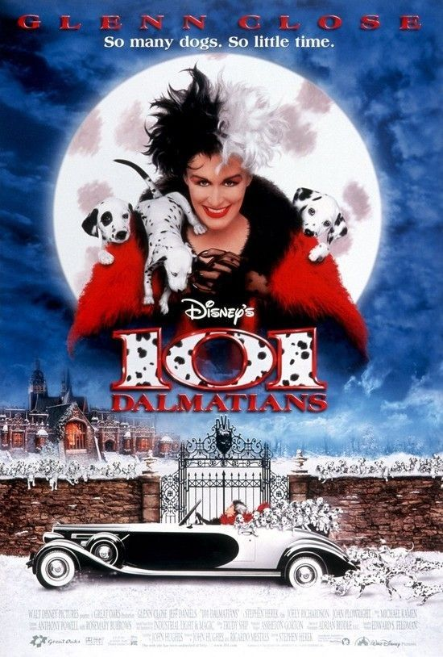
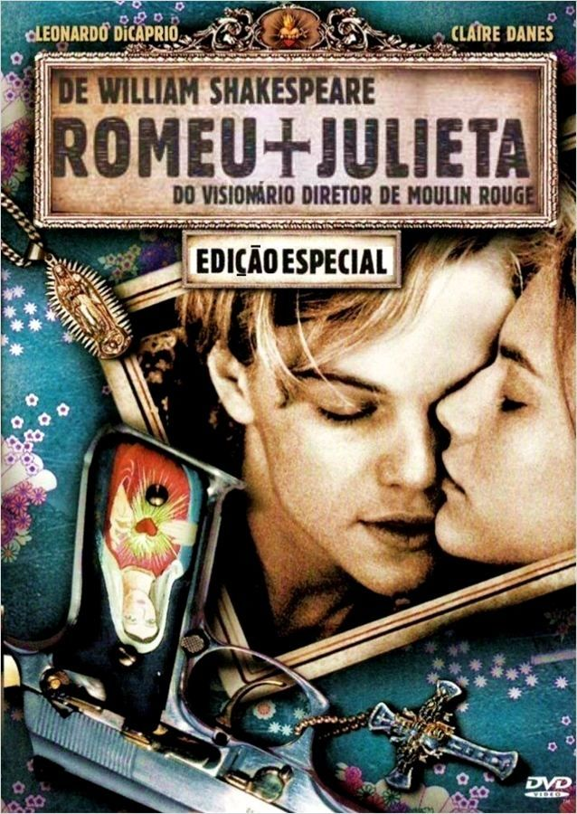
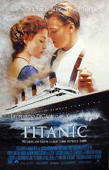
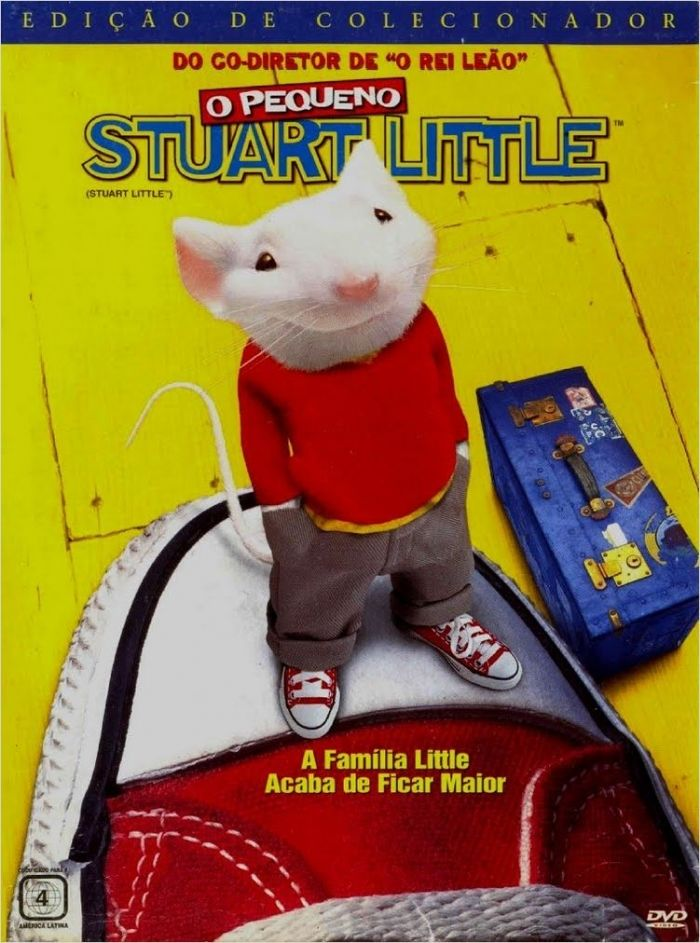
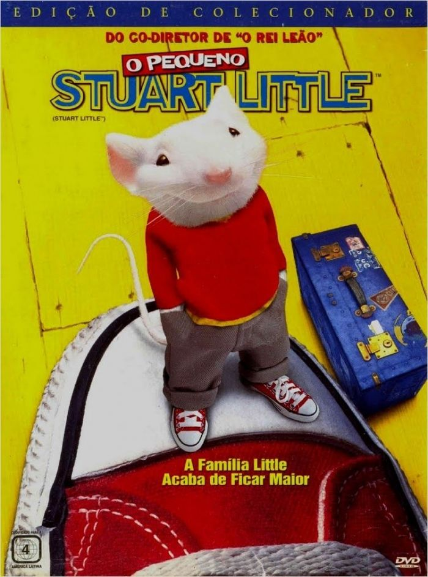
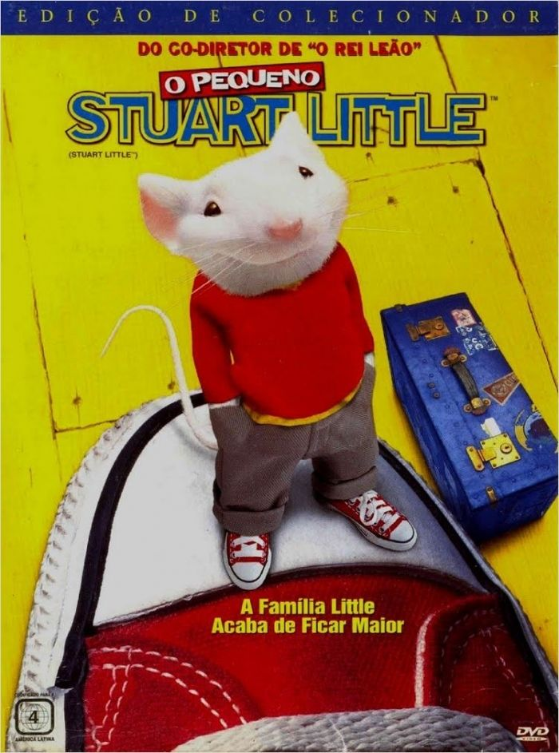

Os 101 Dálmatas, lançado no dia 27/11/1996, dirigido por Stephen Herek.
Romeu e Julieta, lançado no dia 10/01/1997, dirigido por Baz Luhrmann.
Titanic, lançado no dia 16/01/1998, dirigido por James Cameron.
A Noiva de Chucky, lançado no dia 22/01/1999, dirigido por Ronny Yu.
O Pequeno Stuart Little, lançado no dia 14/01/2000, dirigido por Rob Minkoff.




Músicas de sucesso na época:
1996:
20 Fingers Feat. Katrina - Sex Machine
2Pac - How Do U Want It
2Pac Feat. Dr. Dre - California Love
3T - Anything
Abba Cadabra - Dancing Queen
Ace Of Base - Never Gonna Say I'm Sorry
Adam Clayton & Larry Mullen - Theme From "Mission Impossible"
Alanis Morissette - Head Over Feet
Alanis Morissette - Ironic
Alanis Morissette - You Learn
1997:
10000 Maniacs - More Than This
2 Eivissa - Oh La La
49ers - Baby I'm Yours
98 Degrees - Invisible Man
Aaliyah - One In A Million
Aaliyah - The One I Gave My Heart To
Aerosmith - Falling In Love (Is Hard On The Knees)
Aerosmith - Hole In My Soul
Alex Party - Simple Things
Alexia - Uh La La La
Allure Feat. 112 - All Cried Out.
1998:
666 - Alarma!
4 The Cause - Stand By Me
98 Degrees - Because Of You
A. K. Soul & Jocelyn Brown - Free
Aaliyah - Are You That Somebody?
Ace Of Base - Life Is A Flower
Adriana Calcanhoto - Mais feliz
Adriana Calcanhoto - Vambora
Aerosmith - I Don't Want To Miss A Thing
Alana Davis - 32 Flavors
Alanis Morissette - Thank U
1999:
Mais uma vez - Pepê & Neném
I Need You Tonight - Backstreet Boys
Nothing Really Matters - Madonna
The Rockafeller Skank - Fatboy Slim
We're Going To Ibiza - Vengaboys
Praise You - Fatboy Slim
Larger Than Life - Backstreet Boys
Everybody Get Up - Five
Hey Leonardo - Blessid Union Of Souls
2000:
Mexe que é bom (ao vivo) - Zezé di Camargo & Luciano
40 graus - Twister
Me lambe - Raimundos
Só faltava você - Adryana & A Rapaziada
Agachadinho - Harmonia do Samba
Te quero tanto - Maurício Manieri
Megastar - Exaltasamba
Dizem que a felicidade - Art Popular
Os acontecimentos que marcaram a decada de 1996-2000 foram:
9 de Fevereiro de 1996 - O IRA declara o fim de um cessar-fogo de 18 meses, seguido de um atentado bombista em Londres.
31 de Agosto de 1997. A morte trágica de princesa Diana, durante a madrugada, num acidente de automóvel num túnel de Paris choca o Reino Unido e o mundo.
Em 1998 titanic recebe o oscar de melhor filme do ano.
1 de Janeiro DE 1999 - O Euro começa a ser usado em transacções electrónicas, em onze países membros da União Européia, designadamente a Alemanha, a Áustria, a Bélgica, a Espanha, a Finlândia, a França, a Holanda, a Irlanda, a Itália, o Luxemburgo e Portugal.
 
